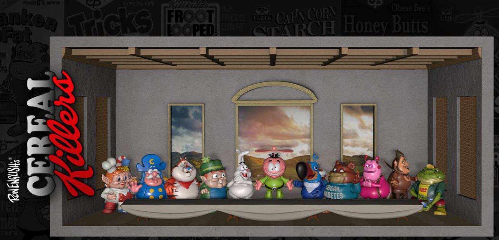

Notes
VeVe diorama / display-environment release connected to Ron English's Cereal Killers and Last Supper imagery.

VeVe diorama / display-environment release connected to Ron English's Cereal Killers and Last Supper imagery.